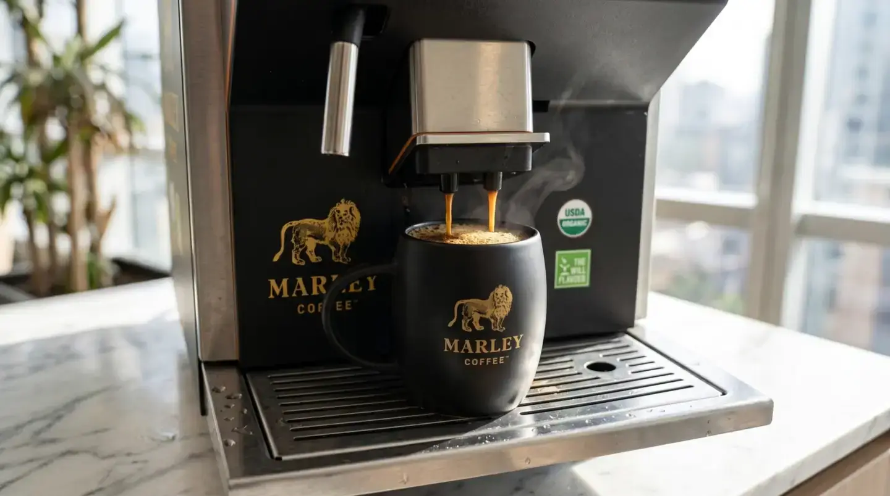

Calculadora · Marley Coffee Empresas
¿Cuánto café usar al mes?
Revisa opciones para tu negocio con los datos de tu operación.
Arma tu propuesta
¿Cómo estimar los kilos que necesitas al mes?
Multiplica las tazas que sirves al día por tus días de atención y por los gramos de café de cada receta. Divide el resultado por 1.000 para obtener kilos orientativos al mes.
¿Cómo calculas el consumo para tu operación?
Usa tazas, días de atención y gramos por receta.
Ver el cálculo, los pasos y las recomendaciones
Parte por tu operación
Registra cuántas tazas sirves en un día habitual y cuántos días abres al mes. Para los gramos por taza, usa la dosis real de tu receta o consúltala con quien prepara el café.
Fórmula: tazas diarias × días de atención × gramos por taza ÷ 1.000 = kilos de café al mes.
Calcula tu consumo
Comienza con este ejemplo editable y reemplázalo por los datos de tu negocio.
Qué revisar antes de hacer un pedido
- Si tu semana tiene días de consumo muy distintos, calcula un promedio con tus propios registros.
- Si sirves recetas con distintas dosis, haz el cálculo por separado y suma los kilos.
- Considera mermas, cambios de temporada y café de respaldo: este cálculo no los incluye automáticamente.
La dosis depende de la receta y la preparación. La investigación de la Specialty Coffee Association muestra distintas prácticas de espresso; no establece una dosis única para todos los negocios.
¿Qué supuestos y preguntas conviene revisar?
Usa el cálculo como orientación y contrástalo con las condiciones de tu operación.
Ver supuestos y preguntas frecuentes
Ver los supuestos y límites
| Ejemplo editable | 80 tazas × 26 días × 9 g = 18,72 kg; son valores ilustrativos, no datos de Marley. |
|---|---|
| Alcance | No incluye mermas, inventario inicial, pedidos en tránsito ni variación de demanda. |
| Unidad | Se supone una dosis de café por taza; si hay recetas distintas, calcula cada una por separado. |
Ver preguntas y respuestas frecuentes
¿Cómo calculo cuántos kilos de café necesito al mes?
Multiplica las tazas diarias por los días de atención y los gramos de café de la receta; divide el total por 1.000 para obtener kilos.
¿Cuántos gramos de café se usan por taza?
Depende de la receta y del método. Usa la dosis que realmente ocupa tu negocio; no hay una cifra única para todas las bebidas.
¿El cálculo incluye mermas y cambios de demanda?
No. Es una estimación base y debes ajustar por mermas, recetas, estacionalidad y variaciones de consumo observadas.
¿Qué fuentes y guías puedes consultar?
Revisa las referencias y la fecha de consulta junto con otros contenidos relacionados.
Ver fuentes y guías relacionadas
Ver fuentes y fecha de consulta
| Fuente | URL | Fecha de consulta |
|---|---|---|
| Specialty Coffee Association · prácticas de preparación de espresso | https://sca.coffee/sca-news/25-magazine/issue-3/defining-ever-changing-espresso-25-magazine-issue-3-zyx36 | Consultado el 10 de noviembre de 2026. |